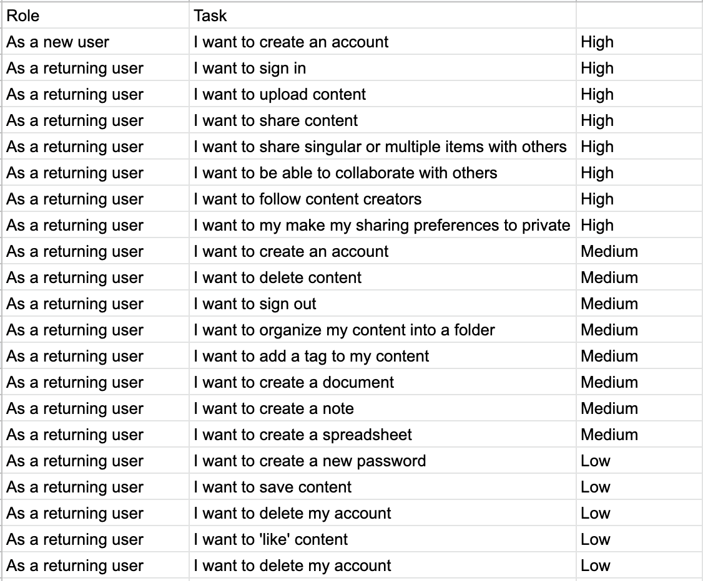
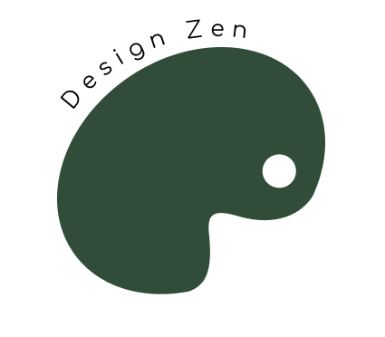

Design Zen is a cloud storage application for artists of all genres to store their work privately, share with the public, and/or collaborate with other talented artists. It’s a place that sparks inspiration and allows networking.
The Problem
It’s difficult to track artistic progress by using multiple applications, like iPhoto for storage and Instagram to post. There isn’t a creative site that allows posting while also having the ability to store their work privately.
The Solution
Create an application that has a reliable and consistent user flow for artists to store and/or share their work.
User Survey
Knowing that I must first identify what users wanted in a cloud storage application I conducted a survey to see if the features such as adding content, creating documents/notes/spreadsheets, uploading content, sharing items, and allowing real time collaboration were important to users or interesting. This helped identify MVP and focus on these features. First I was able to identify that most of my participants used cloud storage already for school, photo storage, and sharing content with people. While the feature of saving content found on the internet got only 61.5% interest, other features like organizing content, creating notes/documents /spreadsheets, sharing options, uploading, and collaborating peaked the interest of the large majority. I also assessed if people would like this site to be for business related purposes or for creative purposes such as ones related to hobby or social media, and the latter got higher votes. This gave me an idea of where to lead the project.

User Persona
Jacqueline
College student
Age: 19
Location: Fresno, CA
Paul
Teacher
Age: 43
Location: Hampton, VA
These two personas were derived from trends and patterns in the user surveys. The target market are those who use cloud storage for recreational use. Jacqueline is a student who wants to be able to collaborate and grow her connections while Paul, who is older and working, wants to share pictures with family he wants to keep in touch with.
Competitive Analysis

Pinterest is a social media platform that similarly allows creative sharing of pictures and videos with goals of inspiration. Pinterest is a wonderful platform for businesses actually. Tags allow similar content to be exposed to many users with the same interest. However, there are some weaknesses and threats. According to my research, 71% of Pinterest users are female due to the belief that it has mostly feminine content and does not appeal to male audiences. There are also a few issues with the pins too. Some spammers abuse pins by using misleading links to get more clicks on their profile. Another problem is that some people find it easy to wrongly pin something. This caused me to want to focus on creating an inclusive site and allowing users to control content they post and activity they see such as using the commonly used “like” button signified by a heart.

DropBox is a cloud storage site that is used mostly by businesses and freelance professionals. It’s a great application because unlike many other sites, you can work offline making it accessible wherever you are. Some weaknesses are the lack of security, limited search function, and users cannot edit in real time. The ability to edit in real time had an interest of 92.9% of people according to the survey so this was a very important feature to have.
User Stories
I prioritized these user stories by understanding what my respondents expected in a basic application and from there building by what they were most interested by.
User Flow
As the user logs in they can upload media to their profile or create a new document. From there they can edit as they wish. Once they finish they will choose their sharing preference: private (so they will only store their work), public (share with anyone even people without accounts), or collaborate. After that they have the option of adding a description or even tags for either themself or others to find easily. They can also add it to a folder. Finally, it will be uploaded.

User flow of adding content and sharing preferences
Sketch and Low-fi Wireframe


These screens are for the privacy setting which offers private, collaborate, or public
Usability Test: Round One
Tasks:
Results: All participants were able to successfully identify pages and complete their tasks. However, some users couldn’t tell when they succeeded because feedback was too subtle and there was no obvious button to perform the function of adding content.
Visual Design
The main colors used are green to evoke feelings of safety and growth, and pink to give hints of liveliness and playfulness.

The name was inspired by the therapeutic feeling that organization gives as well as the peace that artists feel when they are immersed in their passion.
I wanted the logo to be stacked rocks but there were a number of problems such as it was heavily associated with yoga products, it was indistinguishable to people, and it was hard to scale it. I also planned for the colors to be different shades of green but the pink adds a nice pop of liveliness. The logo is the shape of a paint holder to reinforce the site mainly serves artists.
Preference Test
This test helped me solidfy design choices regarding color schemes and layout.


Preference Test
I had users perform the same tasks as the previous usability tests and found the results much more successful. They were able to recognize pages and navigate the site much quicker.

Before
After
I made several changes in my high fidelity mockup by obviously adding color for notifications and creating a large ‘add’ button at the top for users to easily identify, which did prove to be more effective. Users were able to quickly complete their tasks this time around. The biggest feedback I got from this test was about the new options. I changed the wording from “create new” to “new document” and “upload new” to “upload image”. I also changed the three options to be visually equal.
The layout is simple and achieved the goal of having a consistent branding feel. I learned how to develop this through playing with colors and playing around with different logo iterations. I also learned that through tests, whether usability tests or preference tests, you can learn SO much.
All in all, I’ve learned so much! First, branding is so important to communicating to audiences so if something isn’t working listen to your users. It’s important to not get attached to one idea. I had really loved a different logo I made previously. However, users couldn't identify what the logo was and if it were to be scaled down to a favicon the logo would be indistinguishable. I had to let go of this idea that worked so well in my mind and see what would be something users could easily identify and associate with the brand.
I've also learned that user testing is such an awesome tool because it tells you so much as to what is effective, what isn’t working, what do users typically prefer, etc. The more user testing, the better!
Looking in retrospect I would have also added more tasks to my usability test such as “While on the homepage how could you tell if you are following someone or not?” This would help me gauge other features that are not working or that is well done. With more time, I would test on more specific features and distribute the task.